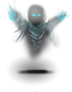
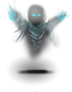
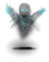

The Graveyard level in the CoC is found on D: 17-18. It contains many dangerous undead, including at least a few liches. It should not be confused with the Dwarven Graveyard (section 2.7). The reward for digging up the many graves (though a chaotic act) can be large, assuming you can deal with whatever lay buried. Especially rewarding, and appropriately dangerous, are the "Great treasures are buried here" graves. It is advised to have Death ray resistance and emergency teleportation available in case you have to face an emperor lich, or lich king, for that matter. The layout of the Graveyard is as follows:
###### ################################################################# ######
#....###.#.#.#.#.#.#.#.#.#.#.#.#.#.#.#.#.#.#.#.#.#.#.#.#.#.#.#.#.#.#.#.###....#
#.<../......................Hallway....................................../....#
#....###.#.#.#.#.#.#.#.#.#.#.#.#.#.#.#.#.#.#.#.#.#.#.#.#.#.#.#.#.#.#.#.###....#
###### ################################################################# ###/##
#.#
################################################################# #.#
#+.+...+.+.+....+...+.++..++.....+...+.+.+++......+.+++.....+..+# #.#
#...+.++......++++....+........++...+..++.++.......+...+.+....>.# #.#
#....+...+.+.++.....+...+.....+..++.+.+...+.+.+..++...+++..+..+.# #.#
#+.++..++........+.+...Inner Sanctum...++++.+..++.+.+++++....+..# #.#
#+..+....+.+.+++.++.+.++.++.+...+.+......+++....+..++++.+++....+# #.#
###### ####/############################################################ ###/##
#....# #.# #....#
#....######.##############################################################....#
#......................................................................../....#
###############################################################################
The hallway snakes around the inner sanctum, which can be accessed only from the bottom left corner, or, at any point via teleportation or digging. The + signs represent graves. The location of the graves is random. Altars can be generated in the inner sanctum. In rare occasions, the small room in the southwest can be a tension room.

The inner sanctum room contains, in addition, more dangerous undead: corpse fiends z, ghosts G, lichs L, mummies Z, greater mummies Z, skeletal warriors Z, spectres Z and vampires Z.


The monsters here who see invisible are: mummies, greater mummies and lichs, who are also capable of self-healing, casting glowing balls, and confusion.
The graves are diggable. See section 0.13.15 concerning digging up graves. See Appendix J and section 0.9.4.9 for monster characteristics.